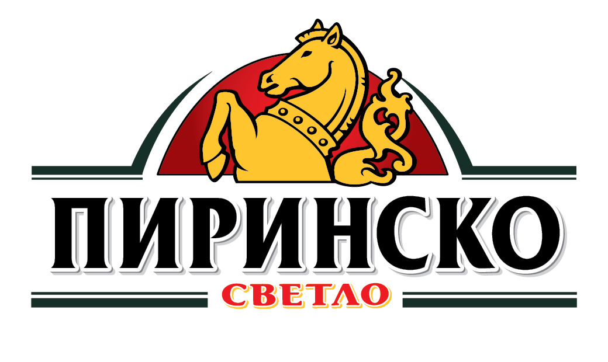
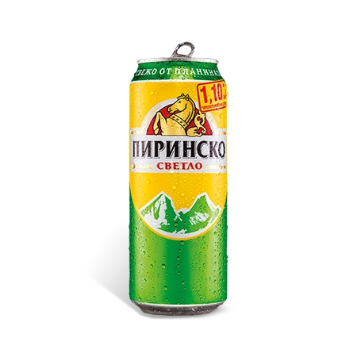

| Вид пиво | Алкохолна стойност и градус | |
|---|---|---|
| „Пиринско светло “ | 10 P и алкохолно съдържание 4,3 % | „Пиринско Радлер“ | микс от 40 % светла бира и 60 % лимонова напитка. |
История на Пиринско пиво
Пивоварната фабрика в Благоевград е основана през 1967 г. като бутилиращо предприятие, като от 1971 г. произвежда бира под марката „Пиринско пиво“. През ноември 2002 г. датския пивоварен концерн „Карлсберг Брюърис“ придобива 67 % от акциите на „Пиринско пиво“ АД. „Карлсберг Брюърис“ инвестира над 30 милиона лева в модернизация на производствените мощности и за привеждане на производството към стандартите на датската компания. „Пиринско“ става част от международното портфолио на датския пивоварен концерн „Карлсберг“